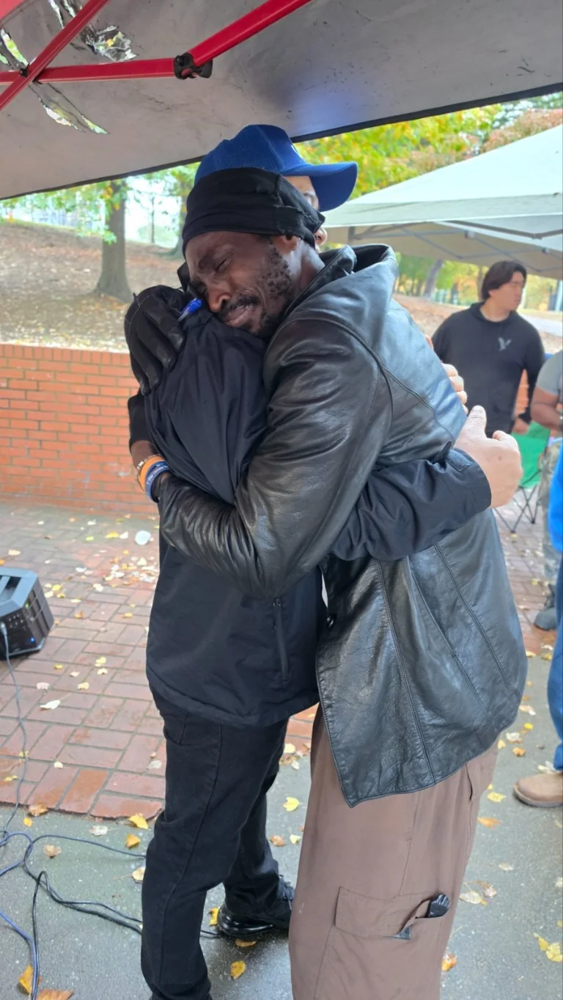
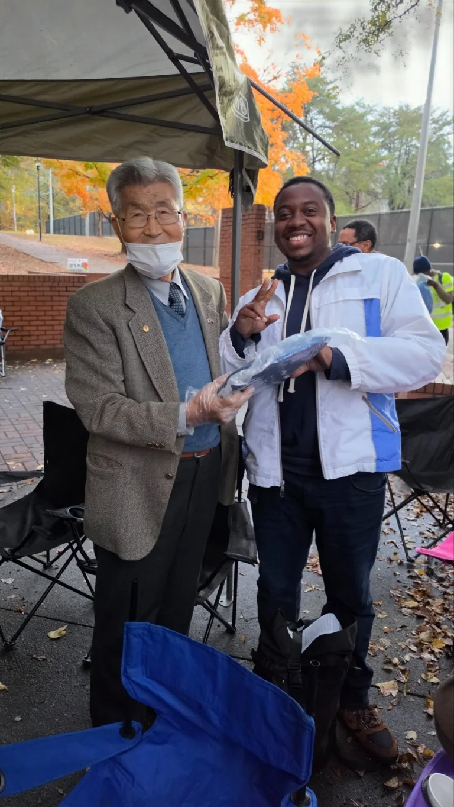

01
Practical care
We bring food and essential supplies to downtown Atlanta, sharing what’s needed with warmth and respect.
Downtown Atlanta outreach · Sundays + Mondays
Come serve with usA neighbor-to-neighbor ministry
A Christian outreach walking alongside Atlanta neighbors experiencing homelessness—with practical care, prayer, counseling, and a community that keeps coming back.

Why we show up
Make a Smile is a Christian mission serving Atlanta’s unhoused community. We believe lasting change begins with being seen, welcomed, and treated with dignity.
Through rehabilitation and referral support, prayer, and faithful relationships, we walk with people as they pursue greater stability in body, mind, and spirit.
Care in practice
A meal. A listening ear. A next step made less lonely. Real care starts close.
We bring food and essential supplies to downtown Atlanta, sharing what’s needed with warmth and respect.
Weekly worship, prayer, and one-to-one conversation make space for connection, encouragement, and spiritual care.
Counseling, referrals, and mentorship help people explore next steps. Pregnant women can receive tailored support for wellbeing and healthy childbirth.

Atlanta, in communityA ministry of presence
Founded by Pastor Peter Oh, Make a Smile brings decades of ministry and mission experience into the streets of Atlanta. The heart of the work is simple: listen, serve, pray, and keep walking together.
Local churches, businesses, mentors, and neighbors all have a part to play.
More about the ministryA glimpse of the gathering
See a little of the faith, fellowship, and care that shape this ministry in downtown Atlanta.
Open video on YouTubePeople make the picture
Small moments of welcome, friendship, and practical care from the community.
There’s room for you here
Time, supplies, prayer, a skill, a partnership, or a gift—every offering can help make care more consistent.
Churches and local businesses: let’s create more ways to serve together.